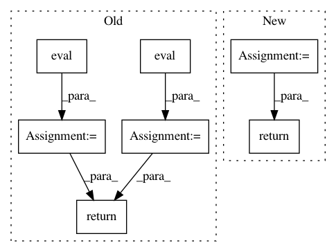

e7512f6bd434ef89296298a8bd16044917d7ce68,examples/gcn2.py,,test,#,72
Before Change
pred = model(data.x, data.adj_t).argmax(dim=-1, keepdim=True)
train_acc = evaluator.eval({
"y_true": data.y[split_idx["train"]],
"y_pred": pred[split_idx["train"]],
})["acc"]
valid_acc = evaluator.eval({
"y_true": data.y[split_idx["valid"]],
"y_pred": pred[split_idx["valid"]],
})["acc"]
test_acc = evaluator.eval({
"y_true": data.y[split_idx["test"]],
"y_pred": pred[split_idx["test"]],
})["acc"]
return train_acc, valid_acc, test_acc
for epoch in range(1, 1001):
loss = train()
After Change
pred, accs = model(data.x, data.adj_t).argmax(dim=-1), []
for _, mask in data("train_mask", "val_mask", "test_mask"):
accs.append(int((pred[mask] == data.y[mask]).sum()) / int(mask.sum()))
return accs
best_val_acc = test_acc = 0
for epoch in range(1, 1001):
In pattern: SUPERPATTERN
Frequency: 3
Non-data size: 7
Instances
Project Name: rusty1s/pytorch_geometric
Commit Name: e7512f6bd434ef89296298a8bd16044917d7ce68
Time: 2020-09-23
Author: matthias.fey@tu-dortmund.de
File Name: examples/gcn2.py
Class Name:
Method Name: test
Project Name: NervanaSystems/nlp-architect
Commit Name: bf6adcde668eefc374338ad639765f0de44e38e6
Time: 2018-07-08
Author: amit.yaccobi@intel.com
File Name: nlp_architect/models/np_semantic_segmentation.py
Class Name: NpSemanticSegClassifier
Method Name: eval
Project Name: tensorlayer/tensorlayer
Commit Name: f80a02568837f1966ad3b1be9c15bd11f90677e0
Time: 2016-07-27
Author: haodong@dyn1227-186.wlan.ic.ac.uk
File Name: tensorlayer/layers.py
Class Name:
Method Name: initialize_rnn_state